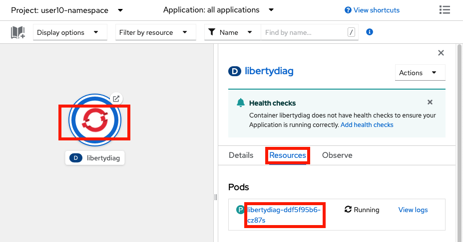
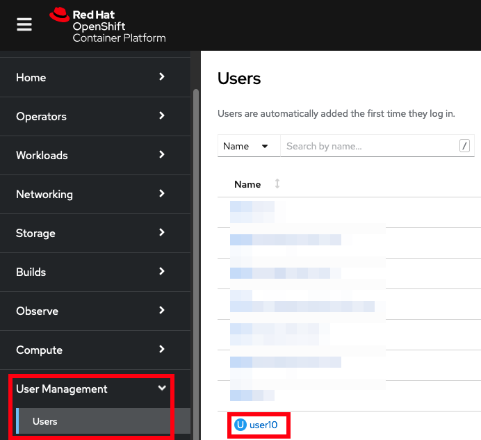

Lab: High Response Times
This lab covers how to investigate high HTTP response times for a sample Liberty application in OpenShift.
Theory
There are many ways to track and review HTTP response times for Liberty in an OpenShift environment:
- Review response times exceeding a configured threshold using Liberty's slow and hung request detection
- Manually gather thread dumps during the issue by opening a terminal in the container and executing
kill -3 $PID - If the application is installed using the WebSphere Liberty Operator, the WebSphereLibertyDump custom resource may be used to gather a Liberty server dump with a thread dump. This only works if the
WebSphereLibertyApplicationcustom resource has the properopenliberty.io/day2operationsannotation, and if the container has a/serviceabilitydirectory. - If you have
cluster-adminpermissions, use the MustGather: Performance, hang, or high CPU issues with WebSphere Application Server on Linux on Containers during the issue and search for repeating patterns in thread dumps - Review individual HTTP response times with Liberty's HTTP access logging, although this will not discover stack traces driving slow response times
- Review average and maximum response times with Eclipse MicroProfile Metrics in Liberty (or in an OpenShift Service) integrated with Prometheus and Grafana in OpenShift or direct queries with a ServiceMonitor, although these techniques will not discover stack traces driving slow response times
- Review individual JAX-RS microservice response times with Eclipse MicroProfile OpenTelemetry (formerly OpenTracing) with Jaeger or Zipkin, although this will not discover stack traces driving slow response times
- Use third-party monitoring products such as Instana
This lab will only cover some of the above methods.
Labs
Choose one or more labs:
- Lab: Response times exceeding a configured threshold
- Lab: Gather a Liberty server dump through the WebSphere Liberty Operator
- Lab: Use the performance/hang/high CPU MustGather on Linux on Containers
- You could also gather thread dumps using
kill -3as done in the High CPU lab.
Lab: Response times exceeding a configured threshold
This lab will use Liberty's slow and hung request detection to print information about HTTP requests that exceed a configured threshold to logs.
This method is generally used when there are intermittent HTTP response time spikes. For example, if the average response time is 5 seconds but users are experiencing intermittent response time spikes of 10 seconds that are unacceptable, then the threshold may be set to 9 seconds to investigate the spikes.
This lab will demonstrate how to configure Liberty's requestTiming feature, trigger it with an example application, and review the output.
The major downside to this approach is that the performance overhead of requestTiming is non-constant. The overhead is proportional to the volume and complexity of requests which should be determined in a performance test environment before configuring requestTiming in production. The main way to reduce the performance overhead is to increase the sampleRate although any value greater than 1 creates a chance of missing some slow requests.
In this lab, you will be using the slowRequestThreshold to trigger the details to the log. There is also a hungRequestThreshold that may be configured although it won't be covered in this lab. When hungRequestThreshold is breached, in addition to the same log message as with slowRequestThreshold, Liberty will take 3 thread dumps, one minute apart.
This lab will take approximately 10 minutes.
Step 1: Install example application
If you haven't already, install the sample application. If you installed it in a previous lab, you may continue using the previous installation.
Step 2: Configure requestTiming
Now that the application is installed and running, you will configure requestTiming to trigger if an HTTP request takes longer than 9 seconds. You will be modifying a running pod. In some real-world cases, this may be infeasible and the image will need to be re-built and re-deployed with the updated configuration.
Using the command line
-
List the pods for the example application deployment; for example:
oc get podsExample output:
NAME READY STATUS RESTARTS AGE libertydiag-b98748954-mgj64 1/1 Running 0 97s -
Open a shell into the pod by replacing
$PODwith a pod name from the previous command:oc rsh -t $PODFor example:
oc rsh -t libertydiag-b98748954-mgj64 -
Copy and paste the following command and press
Enter. Liberty will dynamically update therequestTimingconfiguration in the server (assuming the feature is installed, which it usually is).
echo '<?xml version="1.0" encoding="UTF-8"?><server><featureManager><feature>requestTiming-1.0</feature></featureManager><requestTiming slowRequestThreshold="9s" hungRequestThreshold="300s" sampleRate="1" /></server>' > /config/configDropins/overrides/requestTiming.xml
Using the browser
- In the
Topologyview of theDeveloperperspective, click on thelibertydiagcircle, then click theResourcestab in the drawer on the right, and then click on the one pod that's running:
 - Click on the
Terminaltab to open a remote shell into the running container in the pod:

- Copy and paste the following command and press
Enter. Liberty will dynamically update therequestTimingconfiguration in the server (assuming the feature is installed, which it usually is).
echo '<?xml version="1.0" encoding="UTF-8"?><server><featureManager><feature>requestTiming-1.0</feature></featureManager><requestTiming slowRequestThreshold="9s" hungRequestThreshold="300s" sampleRate="1" /></server>' > /config/configDropins/overrides/requestTiming.xml
Step 3: Exercise long HTTP requests
Now that requestTiming is configured, you will simulate HTTP requests to Liberty and some of them will exceed 9 seconds. This will be done by executing 5 concurrent users that sleep a random amount of time with an average of 5 seconds and a standard deviation of 4 seconds. This means that approximately 68% of requests will be between 1-9 seconds, and the remaining will be either below 1 seconds or above 9 seconds, thus simulating a situation where most requests are fine but a minority exceed the defined threshold.
Using the command line
-
Request the following web page from your terminal to exercise long requests:
-
macOS, Linux, or Windows with Cygwin:
curl -k -s "https://$(oc get route libertydiag "--output=jsonpath={.spec.host}")/servlet/LoadRunner?url=http%3A%2F%2Flocalhost%3A9080%2Fservlet%2FSleep%3Fmean%3D5000%26stddev%3D4000&method=get&entity=&concurrentusers=5&totalrequests=100&user=&password=" -
Windows with Command Prompt:
- Ensure you have
curlfor Windows installed -
List the application's URL:
oc get route libertydiag "--output=jsonpath={.spec.host}{'\n'}" -
Execute the following command, replacing
$HOSTwith the output of the previous command:curl -k -s "https://$HOST/servlet/LoadRunner?url=http%3A%2F%2Flocalhost%3A9080%2Fservlet%2FSleep%3Fmean%3D5000%26stddev%3D4000&method=get&entity=&concurrentusers=5&totalrequests=100&user=&password="
- Ensure you have
-
-
Request the following web page from your terminal to check on the status of the run:
-
macOS, Linux, or Windows with Cygwin:
curl -k -s "https://$(oc get route libertydiag "--output=jsonpath={.spec.host}")/loadrunner.jsp" | grep 'li>Run' -
Windows with Command Prompt:
- Ensure you have
curlfor Windows installed -
List the application's URL:
oc get route libertydiag "--output=jsonpath={.spec.host}{'\n'}" -
Execute the following command, replacing
$HOSTwith the output of the previous command:curl -k -s "https://$HOST/loadrunner.jsp" | findstr 'li>Run'
- Ensure you have
-
-
Keep executing the above command until you see that the
max executionvalue exceeds9000. This means at least one request took more than 9 seconds. (In the statistically rare chance that this doesn't happen, start again at step 1).
Using the browser
- Click on the
Load Runnerlink from the libertydiag application homepage:

-
In the
Target URL, copy and paste the following:http://localhost:9080/servlet/Sleep?mean=5000&stddev=4000 -
Scroll to the bottom and click
Start - You may refresh this page to check on the status of the run. Note that refreshing does not start a new run.
- Keep refreshing until you see that the
max executionvalue exceeds9000. This means at least one request took more than 9 seconds. (In the statistically rare chance that this doesn't happen,Startthe load again.)
Step 4: Review data on long HTTP requests
Now you will review the logs to understand how to investigate slow HTTP requests.
Using the command line
-
List the pods for the example application deployment; for example:
oc get podsExample output:
NAME READY STATUS RESTARTS AGE libertydiag-b98748954-mgj64 1/1 Running 0 97s -
Open a shell into the pod by replacing
$PODwith a pod name from the previous command:oc rsh -t $PODFor example:
oc rsh -t libertydiag-b98748954-mgj64 -
Copy and paste the following command and press
Enter:cat /logs/messages.log -
Scroll up until you find the
TRAS0112Wwarning message signifying that an HTTP request exceeded therequestTimingconfigured threshold. For example:[11/1/22 20:02:12:053 UTC] 00000074 com.ibm.ws.request.timing.manager.SlowRequestManager W TRAS0112W: Request AAPj5+4YXW3_AAAAAAAAAB5 has been running on thread 00000071 for at least 9000.263ms. The following stack trace shows what this thread is currently running. at java.lang.Thread.sleepImpl(Native Method) at java.lang.Thread.sleep(Thread.java:977) at java.lang.Thread.sleep(Thread.java:960) at com.example.servlet.Sleep.doSleep(Sleep.java:79) at com.example.servlet.Sleep.doWork(Sleep.java:40) at com.example.util.BaseServlet.service(BaseServlet.java:104) at jakarta.servlet.http.HttpServlet.service(HttpServlet.java:587) [...] The following table shows the events that have run during this request. Duration Operation 9001.583ms + websphere.servlet.service | libertydiag | com.example.servlet.Sleep?mean=5000&stddev=4000 -
The warning message notes how long the request had been running at the time of the warning (
9000.263ms) followed by a stack trace of what the thread was doing. The stack trace is the main symptom that suggests where the slow-down may be. In this example, the application (com.example[...]) is callingThread.sleepwhich is causing the delay. Below the stack trace, Liberty prints a table showing any events leading up to the time the threshold was exceeded. In this case, the only event is the HTTP request itself which shows the servlet and its parameters. If the application performed other work such as database queries, these would be shown along with their SQLs.
Using the browser
- Open the
Terminalfor the application pod in the OpenShift web console as you did in Step 2 above. -
Copy and paste the following command and press
Enter:cat /logs/messages.log -
Scroll up until you find the
TRAS0112Wwarning message signifying that an HTTP request exceeded therequestTimingconfigured threshold. For example:[11/1/22 20:02:12:053 UTC] 00000074 com.ibm.ws.request.timing.manager.SlowRequestManager W TRAS0112W: Request AAPj5+4YXW3_AAAAAAAAAB5 has been running on thread 00000071 for at least 9000.263ms. The following stack trace shows what this thread is currently running. at java.lang.Thread.sleepImpl(Native Method) at java.lang.Thread.sleep(Thread.java:977) at java.lang.Thread.sleep(Thread.java:960) at com.example.servlet.Sleep.doSleep(Sleep.java:79) at com.example.servlet.Sleep.doWork(Sleep.java:40) at com.example.util.BaseServlet.service(BaseServlet.java:104) at jakarta.servlet.http.HttpServlet.service(HttpServlet.java:587) [...] The following table shows the events that have run during this request. Duration Operation 9001.583ms + websphere.servlet.service | libertydiag | com.example.servlet.Sleep?mean=5000&stddev=4000 -
The warning message notes how long the request had been running at the time of the warning (
9000.263ms) followed by a stack trace of what the thread was doing. The stack trace is the main symptom that suggests where the slow-down may be. In this example, the application (com.example[...]) is callingThread.sleepwhich is causing the delay. Below the stack trace, Liberty prints a table showing any events leading up to the time the threshold was exceeded. In this case, the only event is the HTTP request itself which shows the servlet and its parameters. If the application performed other work such as database queries, these would be shown along with their SQLs.
Step 5: Download Liberty logs
In many cases, you may want the full logs for review on your workstation.
Using the command line
-
List the pods for the example application deployment; for example:
oc get podsExample output:
NAME READY STATUS RESTARTS AGE libertydiag-ddf5f95b6-wj6dm 1/1 Running 0 97s -
Download the Liberty
messages.logby replacing$PODwith a pod name from the previous commandoc cp $POD:/logs/messages.log messages.logFor example:
oc cp libertydiag-ddf5f95b6-wj6dm:/logs/messages.log messages.log
Using the browser
Files other than native logs (equivalent to Liberty's console.log) cannot be downloaded through the browser. You must use the command line steps above. Alternatively, you may use the Terminal tab of the pod and cat the file in the browser.
Summary
In summary, this lab demonstrated how to configure Liberty's requestTiming to investigate HTTP requests that exceed a configured threshold. When this happens, Liberty prints a TRAS0112W warning to its logs with details about why the request may have been slow. When configuring requestTiming, it's advisable to use a monitoring tool to watch for this warning and send out alerts.
The main drawback of requestTiming is that it has a non-constant overhead so it's generally advisable to performance test requestTiming in an environment with simulated load that mimics production to gauge the likely overhead before putting it into production, or increasing sampleRate to reduce the overhead.
Lab: Gather a Liberty server dump through the WebSphere Liberty Operator
This lab will show how to gather a Liberty server dump through the WebSphere Liberty Operator during a high response time issue.
This lab will take approximately 10 minutes.
Step 1: Install example application
If you haven't already, install the sample application using the WebSphere Liberty operator. If you installed it in a previous lab, you may continue using the previous installation. If you previously installed the sample using a basic Kubernetes deployment, then uninstall it and re-install using the WebSphere Liberty operator.
Step 2: Exercise long HTTP requests
Now you will simulate HTTP requests to Liberty and some of them will be long. This will be done by executing 5 concurrent users that sleep a random amount of time with an average of 5 seconds and a standard deviation of 25 seconds. This means that approximately 68% of requests will be less than 30 seconds, and the remaining will be above 30 seconds, thus simulating long requests.
Using the command line
-
Request the following web page from your terminal to exercise long requests:
-
macOS, Linux, or Windows with Cygwin:
curl -k -s "https://$(oc get route libertydiag "--output=jsonpath={.spec.host}")/servlet/LoadRunner?url=http%3A%2F%2Flocalhost%3A9080%2Fservlet%2FSleep%3Fmean%3D5000%26stddev%3D4000&method=get&entity=&concurrentusers=5&totalrequests=100&user=&password=" -
Windows with Command Prompt:
- Ensure you have
curlfor Windows installed -
List the application's URL:
oc get route libertydiag "--output=jsonpath={.spec.host}{'\n'}" -
Execute the following command, replacing
$HOSTwith the output of the previous command:curl -k -s "https://$HOST/servlet/LoadRunner?url=http%3A%2F%2Flocalhost%3A9080%2Fservlet%2FSleep%3Fmean%3D5000%26stddev%3D4000&method=get&entity=&concurrentusers=5&totalrequests=100&user=&password="
- Ensure you have
-
-
Request the following web page from your terminal to check on the status of the run:
-
macOS, Linux, or Windows with Cygwin:
curl -k -s "https://$(oc get route libertydiag "--output=jsonpath={.spec.host}")/loadrunner.jsp" | grep 'li>Run' -
Windows with Command Prompt:
- Ensure you have
curlfor Windows installed -
List the application's URL:
oc get route libertydiag "--output=jsonpath={.spec.host}{'\n'}" -
Execute the following command, replacing
$HOSTwith the output of the previous command:curl -k -s "https://$HOST/loadrunner.jsp" | findstr 'li>Run'
- Ensure you have
-
Using the browser
- Click on the
Load Runnerlink from the libertydiag application homepage:
-
In the
Target URL, copy and paste the following:http://localhost:9080/servlet/Sleep?mean=5000&stddev=25000 -
Scroll to the bottom and click
Start
Step 2: Request a Liberty server dump
You will gather a Liberty server dump using the WebSphere Liberty Operator dump custom resource.
Using the command line
-
List the pods for the example application deployment; for example:
oc get podsExample output:
NAME READY STATUS RESTARTS AGE libertydiag-b98748954-mgj64 1/1 Running 0 97s -
Create a
dump.yamlfile, replacing$PODwith the name of the pod from the previous command (e.g.libertydiag-b98748954-mgj64):apiVersion: liberty.websphere.ibm.com/v1 kind: WebSphereLibertyDump metadata: name: libertydump1 annotations: day2operation.openliberty.io/targetKinds: Pod spec: license: accept: true podName: $POD include: - thread -
Apply the YAML:
oc apply -f dump.yaml
Using the browser
- Ensure the perspective is set to
Developerin the top left:

- Set your current namespace/project to what you were provided. For example:
- In the
Topologyview of theDeveloperperspective, click on thelibertydiagcircle, then click theResourcestab in the drawer on the right, and then copy the name of the pod that's running:
- Click
Operator Backedon the+Addpage:
- Click
WebSphereLibertyDumpand then clickCreate - Expand
Licenseand checkaccept - Paste the pod name from the step above into the
podNametext box. - Expand
includeand since we only want a thread dump, clickRemove includefor the second,Value=heapsection - Click
Create
Step 3: Wait for the server dump to complete
Now that the server dump has been requested, you will check when the server dump has completed.
Using the command line
-
Use the
waitcommand to wait for the dump to complete:oc wait wldump libertydump1 --for condition=completed --timeout=5mExample output:
webspherelibertydump.liberty.websphere.ibm.com/libertydump1 condition met -
List
WebSphereLibertyDumpcustom resources to get the final dump path:oc get wldumpExample output:
NAME STARTED COMPLETED DUMP FILE libertydump1 True True /serviceability/user15-namespace/libertydiag-b98748954-mgj64/2023-01-23_18:30:56.zip
Using the browser
- Click on
Search, click theResourcesdrop down, search fordump, checkWebSphereLibertyDump, click on the resource name created earlier, and wait until there is aCompleted=Trueline in theConditionssection at the bottom:
- Click on the
YAMLtab and scroll down to find thedumpFilelocation:

Step 4: Download the server dump
Download the server dump to your workstation.
Using the command line
-
List the pods for the example application deployment; for example:
oc get podsExample output:
NAME READY STATUS RESTARTS AGE libertydiag-ddf5f95b6-wj6dm 1/1 Running 0 97s -
Download the dump by replacing
$PODwith a pod name from above and$DUMPwith the dump path from the previous step.oc cp $POD:$DUMP dump.zipFor example:
oc cp libertydiag-ddf5f95b6-wj6dm:/serviceability/user15-namespace/libertydiag-ddf5f95b6-wj6dm/2023-01-23_18:30:56.zip dump.zip -
Expand the zip file and you should find lots of diagnostics including a
javacore*.txtfile in the root of the zip which will show thread stacks at the time of the dump. This should include simulated high response time threads; for example:3XMTHREADINFO "Default Executor-thread-1421" J9VMThread:0x00000000002BA800, omrthread_t:0x00007F8000006D50, java/lang/Thread:0x00000000FF943260, state:CW, prio=5 3XMJAVALTHREAD (java/lang/Thread getId:0x5D2, isDaemon:true) 3XMJAVALTHRCCL com/ibm/ws/classloading/internal/ThreadContextClassLoader(0x00000000E2169578) 3XMTHREADINFO1 (native thread ID:0x71C, native priority:0x5, native policy:UNKNOWN, vmstate:CW, vm thread flags:0x00000481) 3XMTHREADINFO2 (native stack address range from:0x00007F80424C1000, to:0x00007F8042501000, size:0x40000) 3XMCPUTIME CPU usage total: 0.015525339 secs, current category="Application" 3XMHEAPALLOC Heap bytes allocated since last GC cycle=0 (0x0) 3XMTHREADINFO3 Java callstack: 4XESTACKTRACE at java/lang/Thread.sleepImpl(Native Method) 4XESTACKTRACE at java/lang/Thread.sleep(Thread.java:977) 4XESTACKTRACE at java/lang/Thread.sleep(Thread.java:960) 4XESTACKTRACE at com/example/servlet/Sleep.doSleep(Sleep.java:79) [...]
Using the browser
Files other than native logs (equivalent to Liberty's console.log) cannot be downloaded through the browser. You must use the command line steps above.
Step 5: Clean-up
Clean-up the server dump resource.
Using the command line
- Delete the
WebSphereLibertyDumpcustom resource:oc delete wldump libertydump1
Using the browser
- Click on
Search, click theResourcesdrop down, search fordump, checkWebSphereLibertyDump, click the vertical ellipses next to the custom resource created earlier, clickDelete WebSphereLibertyDump, and clickDelete.
Summary
In summary, this lab demonstrated how to gather a Liberty server dump for a WebSphere Liberty Operator-based application deployment during a simulated high response time issue.
Lab: Use the performance/hang/high CPU MustGather on Linux on Containers
This lab will use IBM Support's MustGather: Performance, hang, or high CPU issues with WebSphere Application Server on Linux on Containers to gather thread dumps showing any HTTP requests being processed. Any statistical patterns in thread stacks may be used to infer potential causes of high HTTP response times. This MustGather is publicly available and nearly the same as the standalone Linux performance/hang/high-CPU MustGather in that it gathers CPU, memory, disk, network information, thread dumps, etc., and customers should be encouraged to use it if they can accept that it requires cluster-admin permissions to execute.
This lab will demonstrate how to execute the MustGather, download the diagnostics, and review them in the free IBM Thread and Monitor Dump Analyzer (TMDA) tool for potential causes of high HTTP response times.
Note: This lab requires that the user has cluster-admin permissions. A future version of the MustGather will not require administrator permissions.
This lab will take approximately 15 minutes.
Step 0: Check if you have cluster-admin permissions
These steps will show if you have cluster-admin permissions. If you do not, you must skip this lab.
Using the command line
-
Check if you have authority for all verbs on all resources:
oc auth can-i '*' '*'Example output:
yes -
If the answer is
no, then you do not havecluster-adminpermissions.
Using the browser
- Access your OpenShift web console at
https://console-openshift-console.$CLUSTER/. Replace$CLUSTERwith your OpenShift cluster domain. - Ensure the perspective is set to
Administratorin the top left:

- Expand
User Management. If you don't see aUsersoption, then you do not havecluster-adminpermissions. If you do see it, click on it, and then click on your user name:
 - Click on
RoleBindingsand check if any binding has aRole refofcluster-admin. If there are none, then you do not havecluster-adminpermissions.

Step 1: Install example application
If you haven't already, install the sample application. If you installed it in a previous lab, you may continue using the previous installation.
Step 2: Exercise long HTTP requests
Now you will simulate HTTP requests to Liberty and some of them will be long. This will be done by executing 5 concurrent users that sleep a random amount of time with an average of 5 seconds and a standard deviation of 25 seconds. This means that approximately 68% of requests will be less than 30 seconds, and the remaining will be above 30 seconds, thus simulating long requests.
Using the command line
-
Request the following web page from your terminal to exercise long requests:
-
macOS, Linux, or Windows with Cygwin:
curl -k -s "https://$(oc get route libertydiag "--output=jsonpath={.spec.host}")/servlet/LoadRunner?url=http%3A%2F%2Flocalhost%3A9080%2Fservlet%2FSleep%3Fmean%3D5000%26stddev%3D25000&method=get&entity=&concurrentusers=5&totalrequests=100&user=&password=" -
Windows with Command Prompt:
- Ensure you have
curlfor Windows installed -
List the application's URL:
oc get route libertydiag "--output=jsonpath={.spec.host}{'\n'}" -
Execute the following command, replacing
$HOSTwith the output of the previous command:curl -k -s "https://$HOST/servlet/LoadRunner?url=http%3A%2F%2Flocalhost%3A9080%2Fservlet%2FSleep%3Fmean%3D5000%26stddev%3D25000&method=get&entity=&concurrentusers=5&totalrequests=100&user=&password="
- Ensure you have
-
-
Request the following web page from your terminal to check on the status of the run:
-
macOS, Linux, or Windows with Cygwin:
curl -k -s "https://$(oc get route libertydiag "--output=jsonpath={.spec.host}")/loadrunner.jsp" | grep 'li>Run' -
Windows with Command Prompt:
- Ensure you have
curlfor Windows installed -
List the application's URL:
oc get route libertydiag "--output=jsonpath={.spec.host}{'\n'}" -
Execute the following command, replacing
$HOSTwith the output of the previous command:curl -k -s "https://$HOST/loadrunner.jsp" | findstr 'li>Run'
- Ensure you have
-
Using the browser
- Click on the
Load Runnerlink from the libertydiag application homepage:
-
In the
Target URL, copy and paste the following:http://localhost:9080/servlet/Sleep?mean=5000&stddev=25000 -
Scroll to the bottom and click
Start
Step 3: Execute the MustGather
Now you will execute the MustGather. This takes approximately 6 minutes to run.
Using the command line
- Download a helper script:
- macOS or Linux: containerdiag.sh
- Windows: containerdiag.bat
- Open a
TerminalorCommand Promptand change directory to where you downloaded the script -
On macOS or Linux, make the script executable:
chmod +x containerdiag.sh -
On macOS, remove the download quarantine:
xattr -d com.apple.quarantine containerdiag.sh -
List the current deployments:
oc get deploymentsExample output:
NAME READY UP-TO-DATE AVAILABLE AGE libertydiag 1/1 1 1 13m -
Execute the MustGather. Normally, the
-coption specifying the directory of the javacores is not needed; however, this sample application overrides the default javacore directory using-Xdump. This is common in container deployments so that a directory may be used that's mounted on a permanent disk so that diagnostics are still available if a pod is killed.-
macOS or Linux:
./containerdiag.sh -d libertydiag libertyperf.sh -c "/opt/ibm/wlp/output/defaultServer/logs/diagnostics/javacore*" -
Windows:
containerdiag.bat -d libertydiag libertyperf.sh -c "/opt/ibm/wlp/output/defaultServer/logs/diagnostics/javacore*"
-
-
When the MustGather is complete, you will see a repeating message of the form:
run.sh: Files are ready for download. Download with the following command in another window: oc cp [...] -
Open another
TerminalorCommand Promptand copy & paste theoc cpline that you saw in the previous step. For example (your command will be different):$ oc cp worker4-debug:/tmp/containerdiag.SN9RbwVmfC.tar.gz containerdiag.SN9RbwVmfC.tar.gz --namespace=openshift-debug-node-g8dqbdfx5d tar: Removing leading `/' from member names -
Go back to the previous
TerminalorCommand Prompt, typeok, and pressEnterto complete the MustGather:After the download is complete, type OK and press ENTER: ok [2022-11-08 19:01:03.670923238 UTC] run.sh: Processing finished. Deleting /tmp/containerdiag.SN9RbwVmfC.tar.gz [2022-11-08 19:01:03.674236286 UTC] run.sh: finished. -
Expand the
containerdiag.*.tar.gzfile that you downloaded.
Using the browser
The MustGather cannot be executed from the browser. You must use the command line steps above.
Step 4: Analyze the thread dumps
If you are familiar with analyzing thread dumps, you may skip this step.
Using the TMDA tool
- Go to https://www.ibm.com/support/pages/ibm-thread-and-monitor-dump-analyzer-java-tmda
- Download the JAR file
- Double click to launch TMDA
- Click File } Open Thread Dumps
- Go to where you expanded
containerdiag.*.tar.gzin the previous step } pods } libertydiag } containers } libertydiag } Multi-select all javacore.txt files and click Open - Multi-select all the thread dumps and click the Compare Threads button

- Expand the left pane of threads. The default sort is by average stack depth for a thread which tends to correlate with activity. Each row is a thread and each column is a thread dump.

-
Click on a cell to show a thread stack on the right. Explore the various stacks and look for patterns. You should notice two distinct patterns:
-
Stacks in
Thread.sleepImpl. These are the simulated long-running requests.at java/lang/Thread.sleepImpl(Native Method) at java/lang/Thread.sleep(Thread.java:977) at java/lang/Thread.sleep(Thread.java:960) at com/example/servlet/Sleep.doSleep(Sleep.java:79) [...] -
Stacks in
SocketInputStream.socketRead0. These are the load runner users.at java/net/SocketInputStream.socketRead0(Native Method) [...] at com/example/loadrunner/SimulatedUser.call(SimulatedUser.java:113) [...]
-
-
With a sufficient number of thread dumps and a persistent pattern of stack tops, this may be used to hypothesize likely causes of slow HTTP requests.
Summary
In summary, this lab demonstrated how to execute the performance/hang/high CPU MustGather on Linux on Containers, download the diagnostics, and review them in the free IBM Thread and Monitor Dump Analyzer (TMDA) tool. With a sufficient number of thread dumps and a persistent pattern of stack tops during a time of slow HTTP requests, this data may be used to hypothesize likely causes of slow HTTP requests.